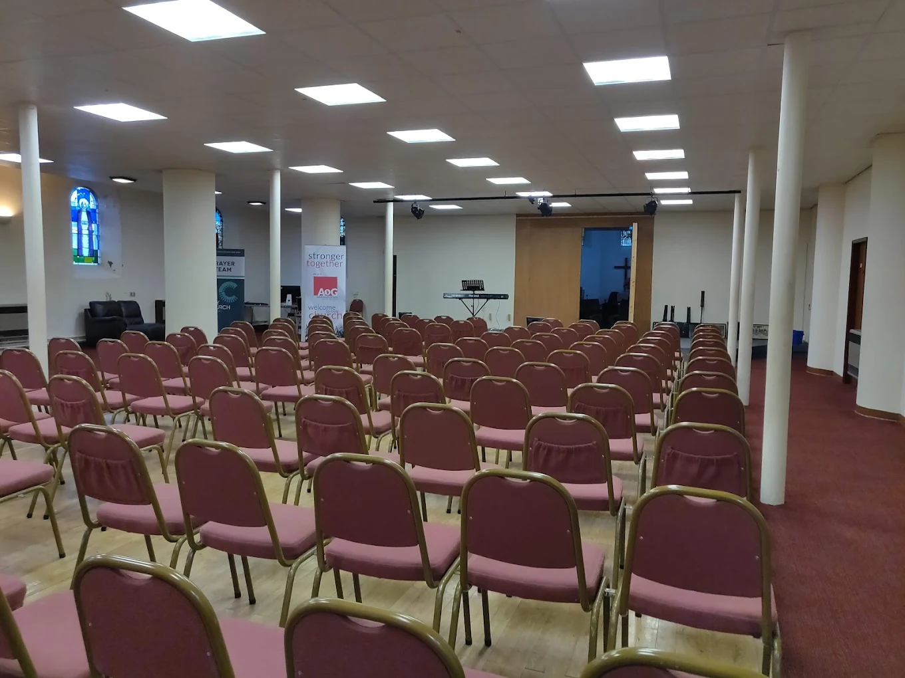
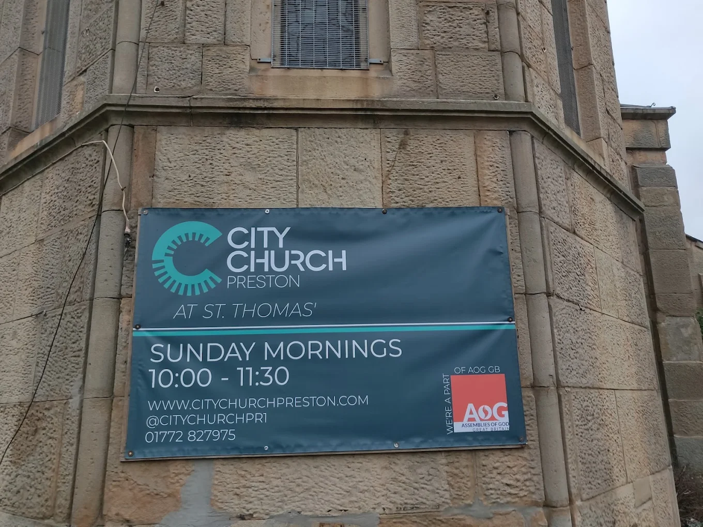

You are very Welcome
A community of faith, hope and love
Our St. Thomas' building is open on Sunday mornings between 10:00 - 13:00, with our Sunday Service from 11:00 - 12:00.
Discover our story


Hello & Welcome
We are a community of faith, hope and love.
We are a vibrant church and extremely active in the local community. We value and respect people and the contribution that they bring. We seek to help and empower individuals to live life to the full, to make great choices and to experience at first hand the abundant and blessed life that God offers through Jesus. We support people as they make their own journey to faith, and seek to encourage and help people on the way, at whatever stage of their journey they are at.
We want everyone to feel that they belong and are a valuable and contributing part of our community of love, hope and faith. We believe that we are all accepted by God by his grace, and that God is not angry with us or judging us, as all our wrong-doings have been dealt with by Jesus sacrifice on the cross. The free gift of God's forgiveness opens up the opportunity equally to us all, to experience and enjoy relationship and peace with God.
Watch our introduction

Sunday Gathering
Open access: 10:30 - 13:00 | Service: 11:00 - 12:00
Stay up to date
Sign up to receive news and updates from City Church Preston.